2. SQSのチュートリアル実装(CLI編)¶
以下の内容に関して理解するためにチュートリアルを行う
キューの作り方
DLTの設定方法
メッセージの送受信方法
参考にしたサイト
2.1. キューの作り方¶
SQSのキューの作成方法について整理する
2.1.1. CLIで作成する場合¶
まずは、キューが存在するかの確認。以下コマンドで、現在のキューを確認できる。何もない場合は返値なし
$ aws sqs list-queues
キューの作成はcreate-queueコマンド（以下は標準キューを作成する場合）
$ aws sqs create-queue --queue-name [YOUR_QUEUE_NAME]
{
"QueueUrl": "https://sqs.ap-northeast-1.amazonaws.com/[AWS_ACCOUNT_ID]/[YOUR_QUEUE_NAME]"
}
FIFOキューを作成する場合は、キュー名の最後に.fifoを追加して、FifoQueue=Trueのオプションを追加する
$ aws sqs create-queue --queue-name [YOUR_QUEUE_NAME].fifo --attributes FifoQueue=true
改めて、キューの確認を行うと作成したキューが確認できる
$ aws sqs list-queues
{
"QueueUrls": [
"https://sqs.ap-northeast-1.amazonaws.com/[AWS_ACCOUNT_ID]/[YOUR_QUEUE_NAME]"
]
}
また、作成したキューについての詳細をget-queue-attributesで表示させることができる
$ aws sqs get-queue-attributes --attribute-names All --queue-url https://sqs.ap-northeast-1.amazonaws.com/[AWS_ACCOUNT_ID]/[YOUR_QUEUE_NAME]
{
"Attributes": {
"QueueArn": "arn:aws:sqs:ap-northeast-1:[AWS_ACCOUNT_ID]:[YOUR_QUEUE_NAME]",
"ApproximateNumberOfMessages": "0",
"ApproximateNumberOfMessagesNotVisible": "0",
"ApproximateNumberOfMessagesDelayed": "0",
"CreatedTimestamp": "1683331260",
"LastModifiedTimestamp": "1683331260",
"VisibilityTimeout": "30",
"MaximumMessageSize": "262144",
"MessageRetentionPeriod": "345600",
"DelaySeconds": "0",
"ReceiveMessageWaitTimeSeconds": "0",
"SqsManagedSseEnabled": "true"
}
}
得られる属性値のうち、キューの状態を表すものは以下
ApproximateNumberOfMessages
未処理のメッセージの数ApproximateNumberOfMessagesNotVisible
Consumerが取得したが、処理完了していないメッセージ数（処理中のメッセージ数）ApproximateNumberOfMessagesDelayed
遅延時間が設定されているメッセージ数（Consumer処理可能になるまで待機しているメッセージ数）
得られる属性値のうち、キューの設定値を表すものは以下
VisibilityTimeout
可視性タイムアウト（他のConsumerにメッセージが見えるようになるまでの時間）DelaySeconds
遅延時間（受信してから、Consumerがメッセージが見えるようになるまでの時間）ReceiveMessageWaitTimeSeconds
メッセージがポーリングされる際の最大待機時間MessageRetentionPeriod
メッセージが保管される期間
コンソールから確認すると以下
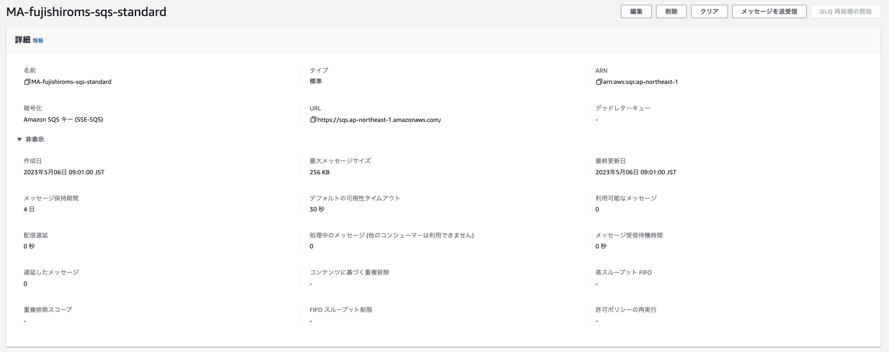
2.1.2. GUIで作成する場合¶
キュータイプと名前を指定する
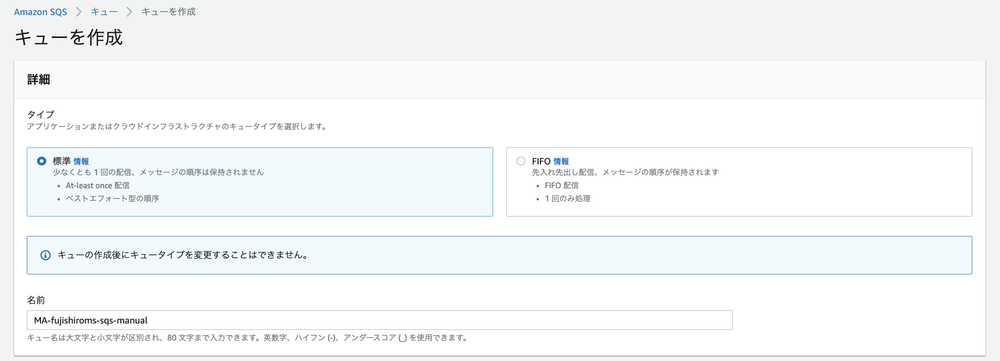
キューに対する遅延時間や可視性タイムアウトを設定する
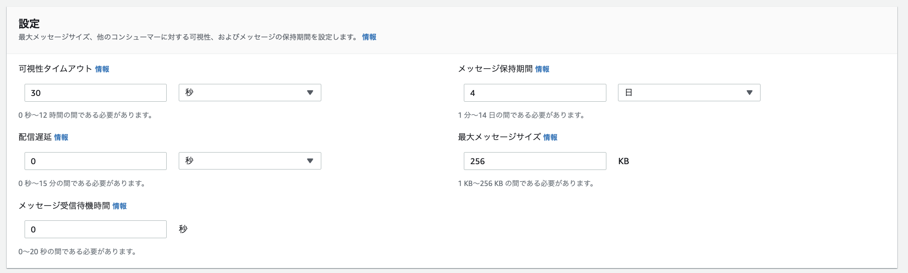
暗号化とアクセスポリシーを設定する
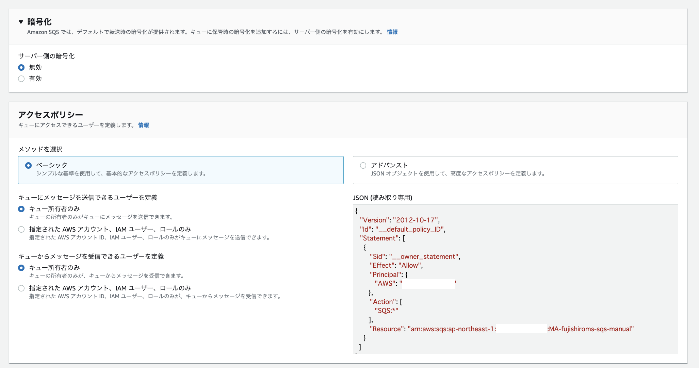
2.2. DLTの設定方法¶
CLIから作成する場合は、RedrivePolicyをオプションとして指定することで作成することができるが、詳細は公式ドキュメントを参照されたい。
コンソール画面からは、キューを作成や更新する際に指定することができる。注意点として、DLQは送信元のキューと同じキュータイプ（標準・FIFO）を設定する必要がある。
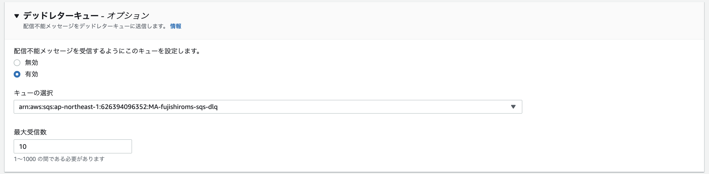
最大受信数に設定した回数、、キューが失敗した場合にDLQに送信される。
2.3. メッセージの送受信方法¶
2.3.1. CLIで送信¶
send-messageを利用してメッセージを送信するとメッセージIDとメッセージのハッシュが返却される
aws sqs send-message --queue-url "https://sqs.ap-northeast-1.amazonaws.com/[AWS_ACCOUNT_ID]/[YOUR_QUEUE_NAME]" --message-body "hello world"
{
"MD5OfMessageBody": "5eb63bbbe01eeed093cb22bb8f5acdc3",
"MessageId": "1db7869e-5ca0-4e97-810c-bb7b7b7522bc"
}
2.3.2. コンソールから送信¶
SQSのコンソールから、キューを選択しメッセージを送受信を選択
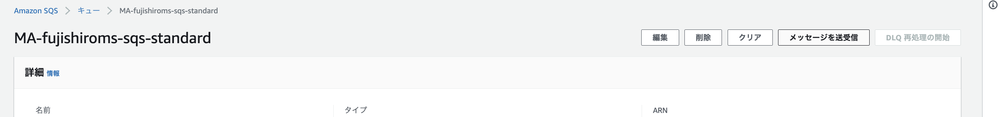
メッセージを送信タブから、メッセージ本文を記載して送信する
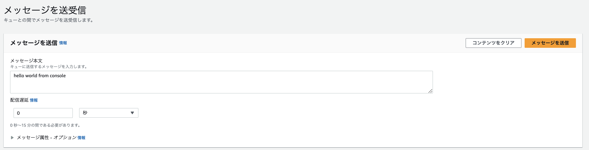
2.3.3. 送信の確認¶
CLIからApproximateNumberOfMessagesを確認する
$ aws sqs get-queue-attributes --attribute-names ApproximateNumberOfMessages --queue-url "https://sqs.ap-northeast-1.amazonaws.com/[AWS_ACCOUNT_ID]/[YOUR_QUEUE_NAME]"
{
"Attributes": {
"ApproximateNumberOfMessages": "2"
}
}
もしくは、コンソールから利用可能なメッセージを確認する
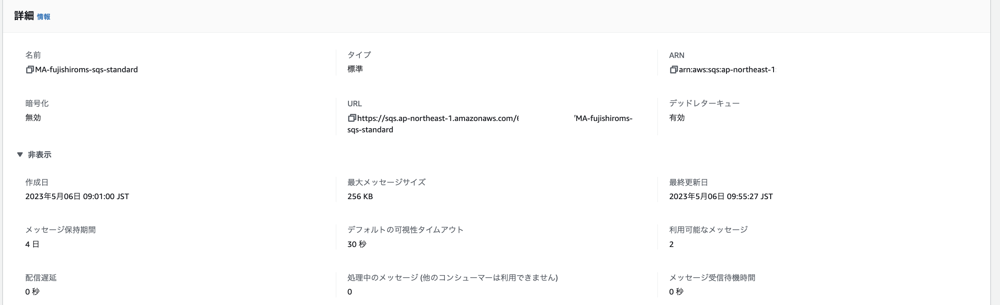
2.3.4. コンソールで受信確認¶
まず、コンソールからキュー内のメッセージを受信することができる。 注意点は、SQSはメッセージを受信しただけではなく、削除までする必要があるので、このオペレーションを繰り返すと、受信回数が増えてDLQに移動してしまうこと。
SQSのコンソールから、キューを選択しメッセージを送受信を選択
メッセージを受信タブから、メッセージをポーリングする
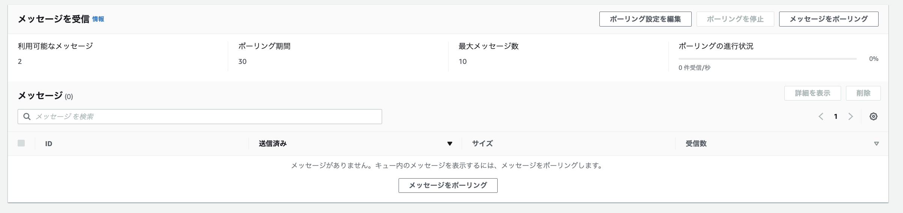
ポーリングの結果得られたメッセージを押下すると、本文などが確認できる。
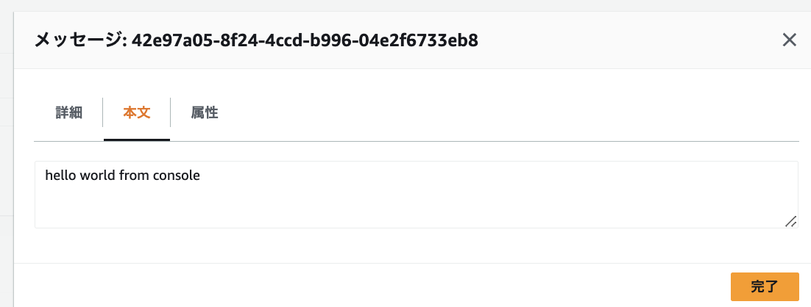
ポーリングをDLQで設定した回数分行うとDLQに移動する
2.3.5. CLIでメッセージ受信と削除¶
次に、メッセージをコンソールから受信し、その上で削除を行う。
メッセージの受信はreceive-messageを利用する。メッセージは複数格納されていても、1つのメッセージだけが受信される
$ aws sqs receive-message --queue-url "https://sqs.ap-northeast-1.amazonaws.com/[AWS_ACCOUNT_ID]/[YOUR_QUEUE_NAME]"
{
"Messages": [
{
"MessageId": "698a7959-7d80-4125-9ccf-2a1a52334606",
"ReceiptHandle": "AQEBQfRoUCKb74uFFlmZT~~~~",
"MD5OfBody": "11b1d675d840f10f85fed95d4af7264a",
"Body": "message_from_console1"
}
]
}
SQSではメッセージの処理が完了したら、明示的にメッセージの削除を行う必要がある。
メッセージの削除はdelete-messageを利用する。また、メッセージを指定するために受信した際に受け取った`ReceiptHandle"を指定して削除するメッセージを決める
$ aws sqs delete-message --queue-url "https://sqs.ap-northeast-1.amazonaws.com/[AWS_ACCOUNT_ID]/[YOUR_QUEUE_NAME]" --receipt-handle "AQEBQfRoUCKb74uFFlmZT~~~~"
削除されたことで、メッセージキューにも、DLQにもメッセージが存在しないことが確認できる。
3. SQSのチュートリアル実装(Java編)¶
参考サイト
3.1. SQSの作成¶
SQSは別資料で作成した標準キューを再利用する
3.2. EC2の作成¶
基本的にはデフォルトでEC2を作成。
IAMについては以下のポリシーを持つIAMポリシーを作成しておき付与する
{
"Version": "2012-10-17",
"Statement": [
{
"Sid": "VisualEditor0",
"Effect": "Allow",
"Action": [
"sqs:DeleteMessage",
"sqs:ReceiveMessage",
"sqs:SendMessage"
],
"Resource": "arn:aws:sqs:ap-northeast-1:[アカウントID]:[SQS_NAME]"
}
]
}
3.3. Javaのプログラム作成（Producer¶
JavaからSQSへのアクセスには、AWS公式のライブラリaws-java-sdk-sqsを利用することとする。pomに以下を追加する。
pom.xml
<dependency>
<groupId>com.amazonaws</groupId>
<artifactId>aws-java-sdk-sqs</artifactId>
<version>1.12.116</version>
</dependency>
3.3.1. config¶
src/main/javaの配下にconfigのディレクトリを作成して、sqsConfigを作成する
package com.msa.aws.sqs.sqs_producer.config;
import com.amazonaws.services.sqs.AmazonSQS;
import com.amazonaws.services.sqs.AmazonSQSClientBuilder;
import org.springframework.context.annotation.Bean;
import org.springframework.context.annotation.Configuration;
@Configuration
public class sqsConfig {
@Bean
public AmazonSQS amazonSQSClient(){
return AmazonSQSClientBuilder.defaultClient();
}
}
@configurationにより、設定クラスであることを宣言
設定クラスではSpringがDIするためのBeanの定義を行う
@Beanにより、メソッドがDIコンテナによって管理させるBeanを作成することを宣言
AmazonSQSClient()メソッドにより、SQSのクライアントを生成する
defaultClient() メソッドは、既定の設定を使用して AmazonSQS クライアントのインスタンスを作成します。
3.3.2. MessageSender¶
package com.msa.aws.sqs.sqs_producer;
import com.amazonaws.services.sqs.AmazonSQS;
import com.amazonaws.services.sqs.model.SendMessageRequest;
import org.springframework.beans.factory.annotation.Autowired;
import org.springframework.stereotype.Component;
@Component
public class MessageSender {
@Autowired
private AmazonSQS amazonSQSClient;
public void sendMessage(){
String url = "https://sqs.ap-northeast-1.amazonaws.com/626394096352/MA-fujishiroms-sqs-standard";
String message = "hello SQS!! FROM JAVA";
SendMessageRequest request = new SendMessageRequest()
.withQueueUrl(url)
.withMessageBody(message)
.withDelaySeconds(5);
amazonSQSClient.sendMessage(request);
}
}
3.3.3. main¶
package com.msa.aws.sqs.sqs_producer;
import org.springframework.boot.SpringApplication;
import org.springframework.boot.autoconfigure.SpringBootApplication;
import org.springframework.context.ApplicationContext;
@SpringBootApplication
public class SqsProducerApplication {
public static void main(String[] args) {
ApplicationContext context = SpringApplication.run(SqsProducerApplication.class, args);
MessageSender sender = context.getBean(MessageSender.class);
sender.sendMessage();
}
}
3.4. Javaのプログラム作成（Consumer¶
3.4.1. Config¶
package com.msa.aws.sqs.sqs_consumer.config;
import com.amazonaws.services.sqs.AmazonSQS;
import com.amazonaws.services.sqs.AmazonSQSClientBuilder;
import org.springframework.context.annotation.Bean;
import org.springframework.context.annotation.Configuration;
@Configuration
public class sqsConfig {
@Bean
public AmazonSQS amazonSQSClient(){
return AmazonSQSClientBuilder.defaultClient();
}
}
3.4.2. MessageReceiver¶
package com.msa.aws.sqs.sqs_consumer;
import com.amazonaws.services.sqs.AmazonSQS;
import com.amazonaws.services.sqs.model.Message;
import com.amazonaws.services.sqs.model.ReceiveMessageRequest;
import com.amazonaws.services.sqs.model.ReceiveMessageResult;
import org.springframework.beans.factory.annotation.Autowired;
import org.springframework.stereotype.Component;
@Component
public class MessageReceiver {
@Autowired
private AmazonSQS amazonSQSClient;
public void receiveMessage(){
String url = "https://sqs.ap-northeast-1.amazonaws.com/626394096352/MA-fujishiroms-sqs-standard";
ReceiveMessageRequest request = new ReceiveMessageRequest()
.withQueueUrl(url)
.withWaitTimeSeconds(5)
.withMaxNumberOfMessages(5);
ReceiveMessageResult result = amazonSQSClient.receiveMessage(request);
for (Message msg : result.getMessages()) {
// 受信したメッセージの情報を表示
System.out.println("["+msg.getMessageId()+"]");
System.out.println(" Message ID : " + msg.getMessageId());
System.out.println(" Receipt Handle : " + msg.getReceiptHandle());
System.out.println(" Message Body : " + msg.getBody());
System.out.println();
// 受信したメッセージを削除
amazonSQSClient.deleteMessage(url, msg.getReceiptHandle());
}
}
}
3.4.3. main¶
package com.msa.aws.sqs.sqs_consumer;
import org.springframework.boot.SpringApplication;
import org.springframework.boot.autoconfigure.SpringBootApplication;
import org.springframework.context.ApplicationContext;
@SpringBootApplication
public class SqsConsumerApplication {
public static void main(String[] args) {
ApplicationContext context = SpringApplication.run(SqsConsumerApplication.class, args);
MessageReceiver receiver = context.getBean(MessageReceiver.class);
receiver.receiveMessage();
}
}
3.5. EC2からの実行¶
3.5.1. jarファイルを移動させる¶
キーペアのコピー
作成した、キーペアをworkspacesにコピーしておく（ファイルのコピーはできないので、テキストベースでコピーする。
権限付与
chmod 600 XXXX.pem
ファイルコピーコマンド実行
scp -i 'EC2秘密鍵' 'ローカルの転送したいファイル' 'EC2ユーザー名@IPアドレス:ファイル配置先
EX)scp -i .ssh/XXX.pem TEST.txt ec2-user@12.34.567.890:/home/
3.5.2. javaのインストール¶
EC2にjavaをインストールして、jarファイルを実行する
javaのインストール
sudo yum install java-11-amazon-corretto
実行
java -jar XXX.jar
3.5.3. 結果¶
Producer側のjarファイルを実行
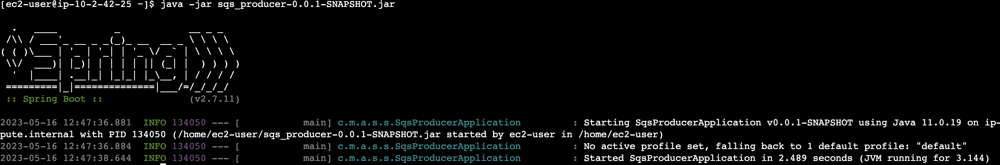
Consumer側のjarファイルを実行すると、メッセージを取得することができる
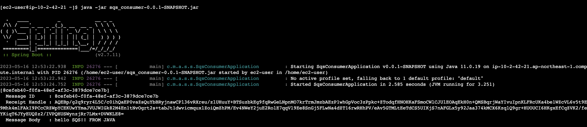
CloudWatchでApproximateNumberOfMessagesVisibleを確認するとConsumer側ではメッセージを削除するので、Produceした分増えた後、Consumeした分減る
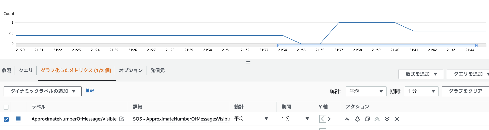
4. SQSの開発環境構築¶
4.1. ProducerのCICD¶
Producer側はバッチで処理を流すので、CodeDeployでEC2上にjarファイルをデプロイする
IntelliJとGithubを連携
GithubとCodeCommitのミラーリング
CodeDeoloyの準備
CodeDeployの設定
CodePipelineの作成
4.1.1. CodeDeployの準備¶
appspec.ymlをJava PJのルートディレクトリに配置する
version: 0.0
os: linux
files:
- source: /target/sqs_producer-0.0.1-SNAPSHOT.jar
destination: /home/ec2-users
EC2上で以下を実行
sudo yum -y update
sudo yum install -y ruby
sudo yum install -y aws-cli
wget https://aws-codedeploy-ap-northeast-1.s3.ap-northeast-1.amazonaws.com/latest/install
chmod +x ./install
sudo ./install auto
また、EC2に付与されているIAMRoleにAmazonEC2RoleforAWSCodeDeployのポリシーを追加
CodeDeployに利用するためのIAM Roleを作成する
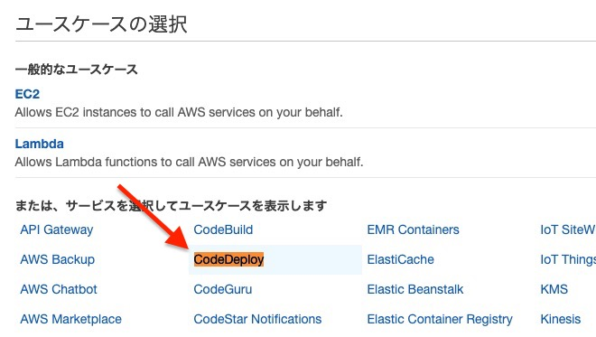
4.1.2. ¶
4.2. ConsumerのCICD¶
IntelliJとgithub連携
ECSの設定
DockerFileの作成
Pipelineの作成
buildspec.ymlの作成
5. SQSの本格実装(Java編)¶
5.1. Producerの改善¶
ハードコーディングした、数字分メッセージを発出する
引数で数字を受け取って、数字分メッセージを発出する
5.2. Consumerの改善¶
常時起動するようにする
受け取った数字分待機するようにする
メトリクスの挙動を確認する